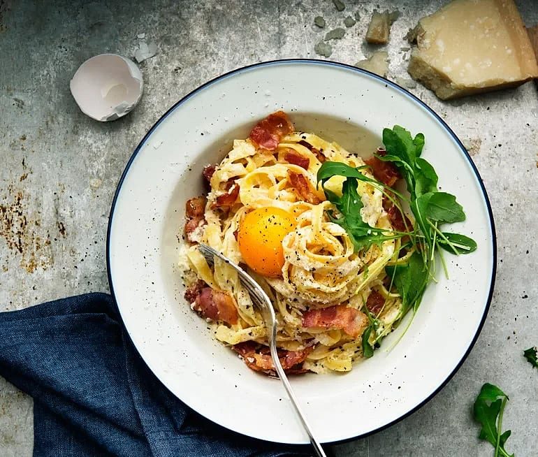
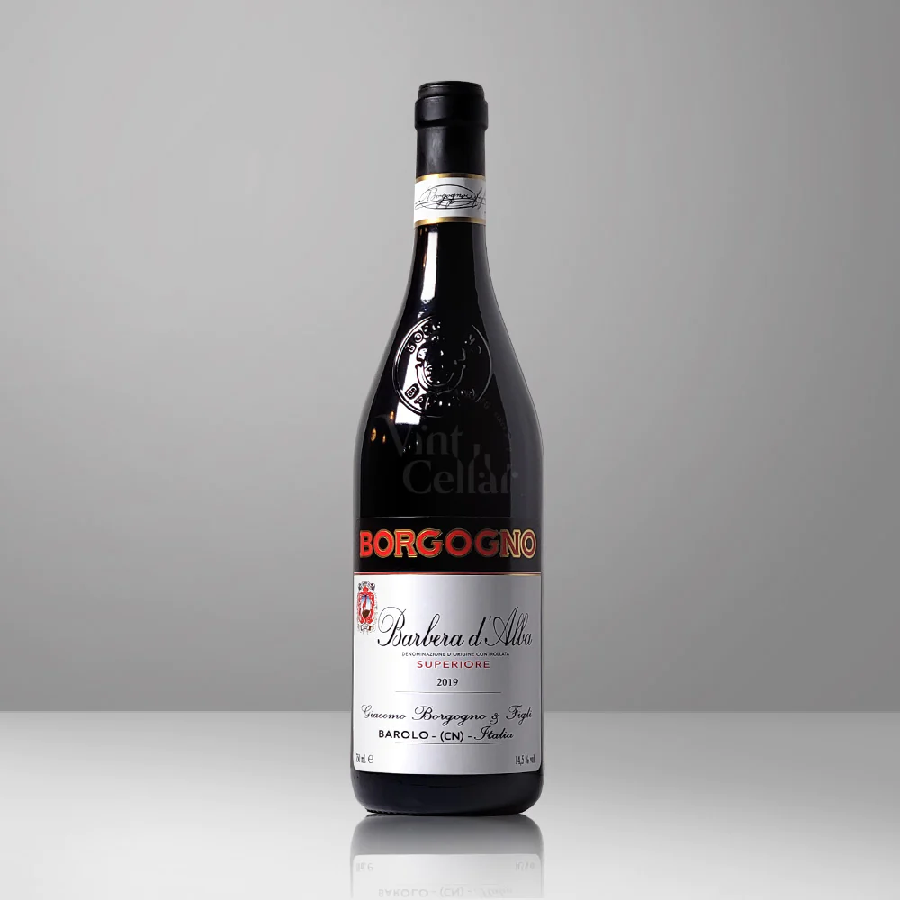

Pasta Carbonara
En härligt krämig carbonara med parmesanost,
ruccola och den finaste svartpepparn, Tellicherry!
Lika god en fredagkväll som till lyxlunch på helgen.

Ingredienser
- 500g färsk spaghetti
- 2 förpackningar bacon(á 140g)
- 4 ägg
- 1dl vispgrädde
- 2dl riven parmesan
- 1/2 tsk salt
- 2 krm nymalen svartpeppar
Till servering
- 70g rucola
- 4 äggulor
Dryckesförslag
Borgogno Barbera d'Alba Superiore, 2018
Rött vin från distriktet Piemonte i Italien av Giacomo Borgogno.
Gör såhär
Steg 1
Koka spaghettin enlight anvisning på förpackningenca 10-15min
Steg 2
Klipp bacon i ca 2 cm stor bitar. Stek baconbitarna knapriga i en stekpanna.ca 5-10min
Steg 3
Vispa ihop ägg, grädde, parmesanost, salt och svartpeppar i en bunke.ca 1min
Steg 4
Häll av pastan och häll tillbaka den i kastrullen,
vänd ner äggblandningen och det stekta baconet.
Rör runt på svag värme till en krämig pasta.ca 5-10min
Steg 5
Till servering: Lägg upp på ett fat tillsammans med ruccolasalladen.
Servera med en extra äggula och dra några extra tag med pepparkvarnen över.